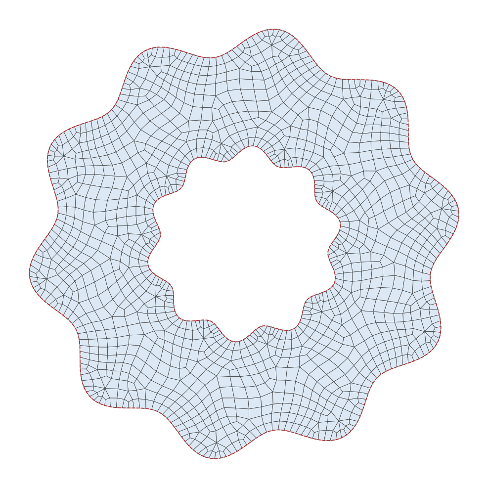

- hole_boundariesBoundary names to set on the holes.
C++ Type:std::vector<BoundaryName>
Controllable:No
Description:Boundary names to set on the holes.
- output_boundaryBoundary name to set on the new outer boundary.
C++ Type:BoundaryName
Controllable:No
Description:Boundary name to set on the new outer boundary.
- output_subdomain_nameSubdomain name to set on the new elements.
C++ Type:SubdomainName
Controllable:No
Description:Subdomain name to set on the new elements.
- smoothTrueWhether to finish the pipeline with a variational smoothing pass, which relaxes the elements. The boundary nodes stay on the boundary but may slide along it; set to false to keep them where the earlier steps placed them.
Default:True
C++ Type:bool
Controllable:No
Description:Whether to finish the pipeline with a variational smoothing pass, which relaxes the elements. The boundary nodes stay on the boundary but may slide along it; set to false to keep them where the earlier steps placed them.
XYQuadrilateralMeshFromBoundaryCurve
Meshes a region bounded by input curves with quadrilaterals in one step, by chaining a frontal Delaunay triangulation, the triangle-to-quadrilateral conversion, the snapping of boundary nodes onto parametric curves, and an optional variational smoothing pass.
Overview
We mesh a curved region with quadrilaterals using a chain of generators: a triangulation in the domain defined by the curve that is biased toward right angles, the conversion of that triangulation into quadrilaterals, the snap of the boundary nodes the conversion added back onto the boundary curves, and an optional smoothing pass. XYQuadrilateralMeshFromBoundaryCurve packages that chain behind one block. It creates the generators as sub-generators:
XYFrontalDelaunayGenerator triangulates the region enclosed by "boundary", around the "holes", at the element size "desired_area". Its
metricandorientationkeep their defaults, which place the right isosceles triangles that recombine well. The triangulation splits the boundary segments that are longer than the desired element size unless "refine_boundary" and "refine_holes" forbid it, which keeps the nodes of the input curves so that the mesh can be stitched to a neighbor sharing them.TriToQuadConverter merges pairs of triangles that reach "eta_min". With "all_quad", its default, the triangles that could not be merged are eliminated and the mesh is purely quadrilateral; without it the mesh is quad-dominant, and the triangles of each subdomain are collected in a subdomain of their own named after it with the suffix
_tri. The elimination splits every element, which adds a node in the middle of every boundary segment: a mesh that must keep the boundary nodes of the input curves also needsall_quad = false.MoveBoundaryNodesToCurveGenerator snaps each boundary named in "snap_boundaries" onto the curve of the ParsedCurveGenerator it is paired with in "parsed_curve_generators", one snap per pair. Boundaries whose geometry is not a parametric curve need no pair and are left alone.
SmoothMeshGenerator runs a variational smoothing pass, unless "smooth" turns it off. The variational algorithm cannot tangle the mesh and only allows node movement that leaves the domain unchanged, so the snapped geometry survives the smoothing. The boundary nodes may still slide along the boundary, so a mesh that must keep its boundary nodes in place also needs
smooth = false.
Example Syntax
A gear profile whose bore is the same gear profile scaled down and rotated slightly, meshed with quadrilaterals in one step. Both boundaries are snapped back onto their curves:
[Mesh<<<{"href": "../../syntax/Mesh/index.html"}>>>]
[outer_curve]
type = ParsedCurveGenerator<<<{"description": "This ParsedCurveGenerator object is designed to generate a mesh of a curve that consists of EDGE2, EDGE3, or EDGE4 elements.", "href": "ParsedCurveGenerator.html"}>>>
x_formula<<<{"description": "Function expression of x(t)"}>>> = '(r+a*sin(n*t))*cos(t)'
y_formula<<<{"description": "Function expression of y(t)"}>>> = '(r+a*sin(n*t))*sin(t)'
section_bounding_t_values<<<{"description": "The 't' values that bound the sections of the curve. Start and end points must be included. The number of entries in 'nums_segments' should be equal to one less than the number of entries in this parameter."}>>> = '${fparse 0.0} ${fparse pi} ${fparse 2.0*pi}'
constant_names<<<{"description": "Vector of constants used in the parsed function (use this for kB etc.)"}>>> = 'r a n'
constant_expressions<<<{"description": "Vector of values for the constants in constant_names (can be an FParser expression)"}>>> = '1.0 0.07 10.0'
nums_segments<<<{"description": "Numbers of segments (EDGE elements) of each section of the curve to be generated. The number of entries in this parameter should be equal to one less than the number of entries in 'section_bounding_t_values'"}>>> = '60 60'
is_closed_loop<<<{"description": "Whether the curve is closed or not."}>>> = true
[]
[inner_curve]
type = ParsedCurveGenerator<<<{"description": "This ParsedCurveGenerator object is designed to generate a mesh of a curve that consists of EDGE2, EDGE3, or EDGE4 elements.", "href": "ParsedCurveGenerator.html"}>>>
x_formula<<<{"description": "Function expression of x(t)"}>>> = '(r+a*sin(n*(t-phi)))*cos(t)'
y_formula<<<{"description": "Function expression of y(t)"}>>> = '(r+a*sin(n*(t-phi)))*sin(t)'
section_bounding_t_values<<<{"description": "The 't' values that bound the sections of the curve. Start and end points must be included. The number of entries in 'nums_segments' should be equal to one less than the number of entries in this parameter."}>>> = '${fparse 0.0} ${fparse pi} ${fparse 2.0*pi}'
constant_names<<<{"description": "Vector of constants used in the parsed function (use this for kB etc.)"}>>> = 'r a n phi'
constant_expressions<<<{"description": "Vector of values for the constants in constant_names (can be an FParser expression)"}>>> = '0.45 0.035 10.0 0.06'
nums_segments<<<{"description": "Numbers of segments (EDGE elements) of each section of the curve to be generated. The number of entries in this parameter should be equal to one less than the number of entries in 'section_bounding_t_values'"}>>> = '40 40'
is_closed_loop<<<{"description": "Whether the curve is closed or not."}>>> = true
[]
[gear]
type = XYQuadrilateralMeshFromBoundaryCurve<<<{"description": "Meshes a region bounded by input curves with quadrilaterals in one step, by chaining a frontal Delaunay triangulation, the triangle-to-quadrilateral conversion, the snapping of boundary nodes onto parametric curves, and an optional variational smoothing pass.", "href": "XYQuadrilateralMeshFromBoundaryCurve.html"}>>>
boundary<<<{"description": "The input MeshGenerator defining the outer boundary of the region to mesh with quadrilaterals."}>>> = 'outer_curve'
holes<<<{"description": "The MeshGenerators that define mesh holes."}>>> = 'inner_curve'
desired_area<<<{"description": "Desired (maximum) triangle area of the triangulation the quadrilaterals are built from, or 0 to size the elements from the boundary alone."}>>> = 0.004
output_boundary<<<{"description": "Boundary name to set on the new outer boundary."}>>> = 'rim'
hole_boundaries<<<{"description": "Boundary names to set on the holes."}>>> = 'bore'
output_subdomain_name<<<{"description": "Subdomain name to set on the new elements."}>>> = 'gear'
parsed_curve_generators<<<{"description": "The ParsedCurveGenerators whose curves the boundaries named in 'snap_boundaries' are snapped onto, one generator per entry of that parameter."}>>> = 'outer_curve inner_curve'
snap_boundaries<<<{"description": "The boundaries whose nodes are snapped onto the curves of 'parsed_curve_generators', one boundary per entry of that parameter. Use the names given in 'output_boundary' and 'hole_boundaries'."}>>> = 'rim bore'
[]
# The recombination breaks score ties by element id, so keep the ids stable
allow_renumbering = false
[]
Figure 1: The gear mesh of the input above.
Input Parameters
- all_quadTrueWhether the triangles that could not be merged are eliminated so that the mesh consists exclusively of quadrilaterals. When false, they are kept and the mesh is quad-dominant.
Default:True
C++ Type:bool
Controllable:No
Description:Whether the triangles that could not be merged are eliminated so that the mesh consists exclusively of quadrilaterals. When false, they are kept and the mesh is quad-dominant.
- eta_min0.3The quality score eta = 1 - (2 / pi) max_k |pi / 2 - alpha_k| of the quadrilateral, in which alpha_k are its four internal angles, that a pair of adjacent triangles must reach to be merged. A rectangle scores 1 and a non-convex quadrilateral 0.
Default:0.3
C++ Type:Real
Unit:(no unit assumed)
Range:eta_min > 0 & eta_min <= 1
Controllable:No
Description:The quality score eta = 1 - (2 / pi) max_k |pi / 2 - alpha_k| of the quadrilateral, in which alpha_k are its four internal angles, that a pair of adjacent triangles must reach to be merged. A rectangle scores 1 and a non-convex quadrilateral 0.
Recombination Parameters
- boundaryThe input MeshGenerator defining the outer boundary of the region to mesh with quadrilaterals.
C++ Type:MeshGeneratorName
Controllable:No
Description:The input MeshGenerator defining the outer boundary of the region to mesh with quadrilaterals.
- desired_area0Desired (maximum) triangle area of the triangulation the quadrilaterals are built from, or 0 to size the elements from the boundary alone.
Default:0
C++ Type:Real
Unit:(no unit assumed)
Range:desired_area>=0
Controllable:No
Description:Desired (maximum) triangle area of the triangulation the quadrilaterals are built from, or 0 to size the elements from the boundary alone.
- holesThe MeshGenerators that define mesh holes.
C++ Type:std::vector<MeshGeneratorName>
Controllable:No
Description:The MeshGenerators that define mesh holes.
- refine_boundaryTrueWhether the triangulation may split the segments of the outer boundary to reach 'desired_area'. Set to false to keep the boundary nodes of the input, for example to stitch the mesh to a neighboring one.
Default:True
C++ Type:bool
Controllable:No
Description:Whether the triangulation may split the segments of the outer boundary to reach 'desired_area'. Set to false to keep the boundary nodes of the input, for example to stitch the mesh to a neighboring one.
- refine_holesWhether the triangulation may split the segments of each hole boundary to reach 'desired_area', one entry per hole. Set to false to keep the boundary nodes of that hole.
C++ Type:std::vector<bool>
Controllable:No
Description:Whether the triangulation may split the segments of each hole boundary to reach 'desired_area', one entry per hole. Set to false to keep the boundary nodes of that hole.
Region Parameters
- enableTrueSet the enabled status of the MooseObject.
Default:True
C++ Type:bool
Controllable:No
Description:Set the enabled status of the MooseObject.
- save_with_nameKeep the mesh from this mesh generator in memory with the name specified
C++ Type:std::string
Controllable:No
Description:Keep the mesh from this mesh generator in memory with the name specified
Advanced Parameters
- nemesisFalseWhether or not to output the mesh file in the nemesisformat (only if output = true)
Default:False
C++ Type:bool
Controllable:No
Description:Whether or not to output the mesh file in the nemesisformat (only if output = true)
- outputFalseWhether or not to output the mesh file after generating the mesh
Default:False
C++ Type:bool
Controllable:No
Description:Whether or not to output the mesh file after generating the mesh
- show_infoFalseWhether or not to show mesh info after generating the mesh (bounding box, element types, sidesets, nodesets, subdomains, etc)
Default:False
C++ Type:bool
Controllable:No
Description:Whether or not to show mesh info after generating the mesh (bounding box, element types, sidesets, nodesets, subdomains, etc)
Debugging Parameters
- parsed_curve_generatorsThe ParsedCurveGenerators whose curves the boundaries named in 'snap_boundaries' are snapped onto, one generator per entry of that parameter.
C++ Type:std::vector<MeshGeneratorName>
Controllable:No
Description:The ParsedCurveGenerators whose curves the boundaries named in 'snap_boundaries' are snapped onto, one generator per entry of that parameter.
- snap_boundariesThe boundaries whose nodes are snapped onto the curves of 'parsed_curve_generators', one boundary per entry of that parameter. Use the names given in 'output_boundary' and 'hole_boundaries'.
C++ Type:std::vector<BoundaryName>
Controllable:No
Description:The boundaries whose nodes are snapped onto the curves of 'parsed_curve_generators', one boundary per entry of that parameter. Use the names given in 'output_boundary' and 'hole_boundaries'.